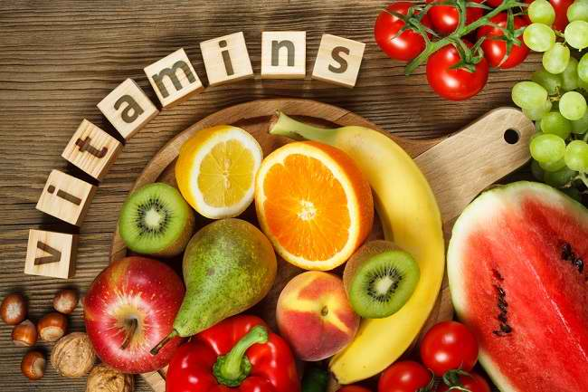

Apa fungsi Vitamin?
Tanggal: 01 Juni 2023
Vitamin adalah senyawa organik yang diperlukan dalam jumlah kecil oleh tubuh manusia untuk menjaga kesehatan dan fungsi tubuh yang optimal. Meskipun tubuh manusia tidak dapat menghasilkan vitamin secara mandiri, vitamin ini diperoleh melalui makanan yang dikonsumsi atau melalui suplemen vitamin. Vitamin memiliki peran yang penting dalam berbagai proses metabolik dan fungsi tubuh. Berikut adalah beberapa fungsi penting dari vitamin dalam kesehatan manusia:
- Vitamin A: Vitamin A penting untuk kesehatan mata, pertumbuhan dan perkembangan sel, serta sistem kekebalan tubuh yang kuat. Vitamin A juga berperan dalam menjaga kesehatan kulit dan membran mukosa.
- Vitamin B kompleks: Vitamin B kompleks, termasuk vitamin B1 (tiamin), B2 (riboflavin), B3 (niasin), B5 (asam pantotenat), B6 (piridoksin), B7 (biotin), B9 (asam folat), dan B12 (kobalamin), berperan penting dalam metabolisme energi, pembentukan sel darah merah, fungsi sistem saraf, dan pemeliharaan kesehatan kulit dan rambut.
- Vitamin C: Vitamin C memiliki peran vital dalam sistem kekebalan tubuh, produksi kolagen untuk kesehatan kulit dan pembuluh darah, penyerapan zat besi, serta perlindungan sel-sel tubuh dari kerusakan akibat radikal bebas.
- Vitamin D: Vitamin D penting untuk penyerapan kalsium dan fosfor, menjaga kesehatan tulang dan gigi yang kuat, serta berperan dalam fungsi sistem kekebalan tubuh. Paparan sinar matahari adalah sumber utama vitamin D, tetapi juga dapat diperoleh dari makanan atau suplemen.
- Vitamin E: Vitamin E merupakan antioksidan yang melindungi sel-sel tubuh dari kerusakan akibat radikal bebas. Vitamin E juga berperan dalam kesehatan kulit, sistem kekebalan tubuh, dan pembentukan sel darah merah.
- Vitamin K: Vitamin K diperlukan untuk pembekuan darah yang normal, menjaga kesehatan tulang, dan berperan dalam pembentukan protein penting dalam tubuh.
Mempertahankan kesehatan dengan asupan vitamin yang cukup adalah penting. Berikut adalah beberapa langkah yang dapat diambil:
- Konsumsi makanan yang kaya akan berbagai jenis vitamin, termasuk buah-buahan, sayuran, biji-bijian, kacang-kacangan, produk susu, dan sumber protein sehat.
- Jika diperlukan, konsultasikan dengan dokter atau ahli gizi untuk mempertimbangkan suplemen vitamin yang sesuai, terutama jika Anda memiliki kebutuhan khusus atau kondisi medis tertentu.
- Perhatikan dosis yang direkomendasikan untuk setiap vitamin, karena konsumsi yang berlebihan dapat berdampak negatif pada kesehatan.
- Hindari kebiasaan makan yang tidak seimbang atau diet yang ketat, karena dapat menyebabkan kekurangan vitamin tertentu
- Perhatikan cara memasak dan penyimpanan makanan untuk meminimalkan kehilangan nutrisi, terutama vitamin yang mudah teroksidasi atau larut dalam air.
Vitamin memainkan peran penting dalam menjaga kesehatan tubuh secara menyeluruh. Dengan konsumsi makanan yang seimbang dan memperhatikan asupan vitamin yang cukup, Anda dapat mendukung sistem kekebalan tubuh yang kuat, menjaga kesehatan tulang dan kulit, serta menjalani kehidupan yang sehat dan bugar.